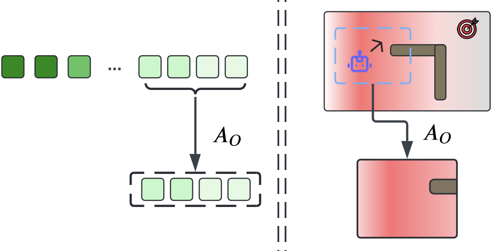
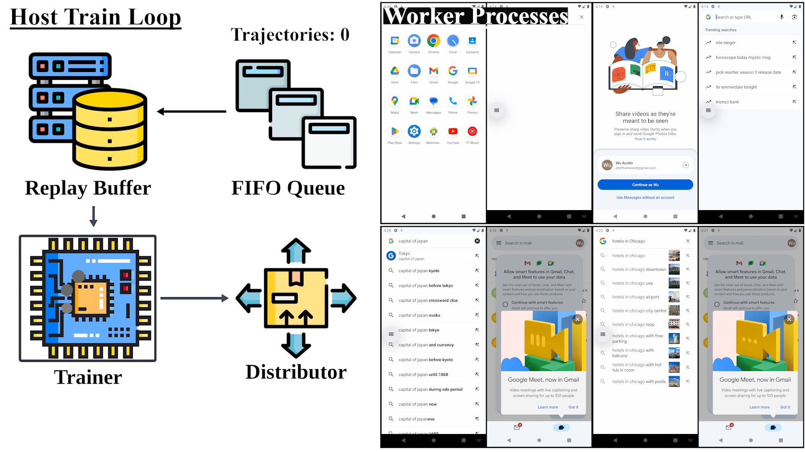
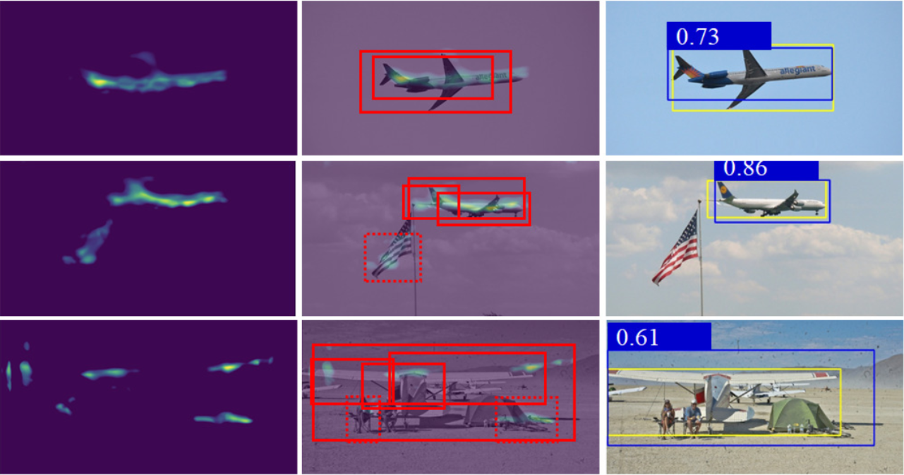

|

|
OCMDP: Observation-Constrained Markov Decision Process
Taiyi Wang*,
Jianheng Liu*,
Bryan Lee,
Zhihao Wu,
Yu Wu
Arxiv Preprint, 2024
arXiv
OCMDP efficiently balances observation costs and control rewards using a model-free iterative RL framework, achieving superior performance in cost-sensitive decision-making tasks.
|
|

|
DistRL: An Asynchronous Distributed Reinforcement Learning Framework for On-device Control Agents
Taiyi Wang*,
Zhihao Wu*,
Jianheng Liu,
Jianye Hao,
Jun Wang,
Kun Shao
NeurIPS Workshop, 2024
project page
/
code
/
arXiv
DistRL introduces a scalable and efficient asynchronous distributed RL framework to enhance online fine-tuning for mobile control agents, achieving superior training efficiency and performance in dynamic real-world tasks.
|
|

|
Detect an Object At Once without Fine-tuning
Junyu Hao*, Jianheng Liu*, Yongjia Zhao, Zuofan Chen, Qi Sun, Jinlong Chen, Jianguo Wei, Minghao Yang
ICONIP, 2024
arXiv
Detects unseen objects in diverse scenes without fine-tuning, using a Similarity Density Map for localization and a Region Alignment Network for precise region alignment.
|
|
{kind=link}